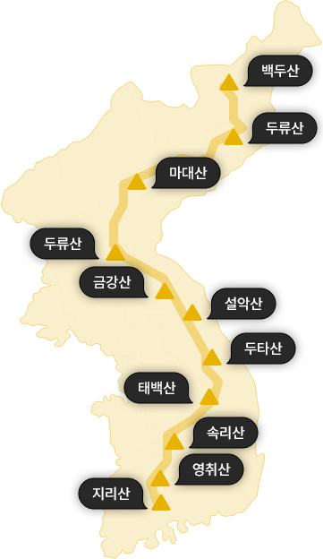
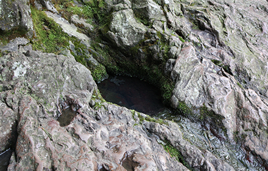
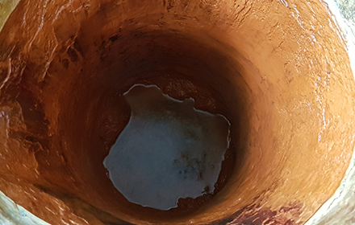
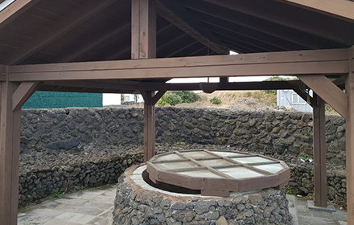
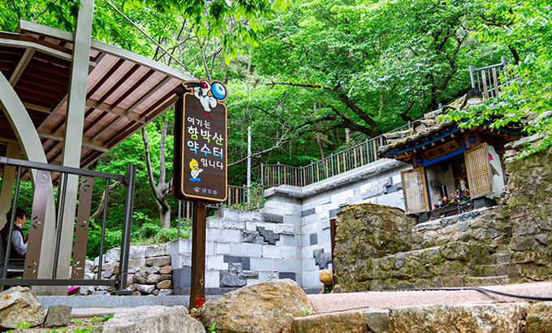
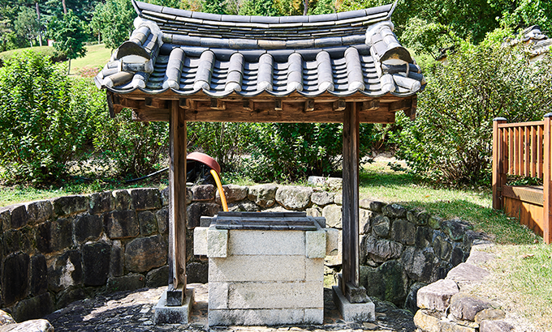
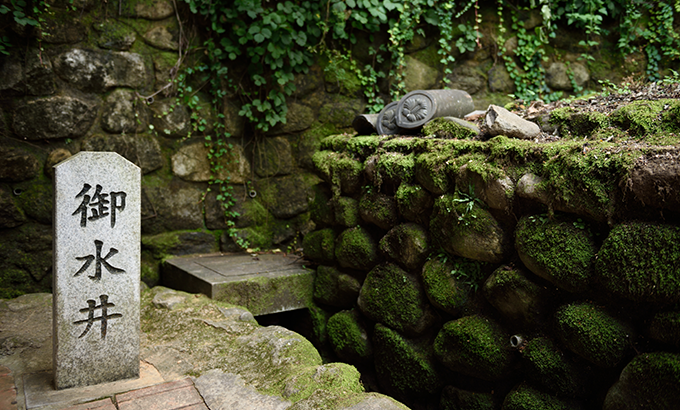
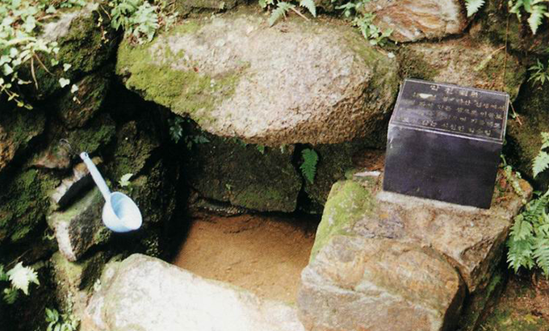

백두대간은 산과 물을 흐름을 파악하고, 인간 생활권 형성에 미친 영향을 고려한 우리 민족 고유의 지리 인식 체계이다.
한반도에서 가장 높은 백두산에서 시작해 두류산 – 금강산 – 설악산 – 오대산 – 태백산 – 소백산 – 월악산 – 속리산 – 덕유산을 지나 지리산까지 남북으로 단절 없이 이어지는 큰 산줄기를 백두대간이라고 한다.
산림청 자료에 따르면, 처음 ‘백두대간’이라는 용어를 사용한 것은 이익의 『성호사설』 (1760년)이고, 신경준이 『산경표』(1770년 경) 에서 이를 체계화한 것으로 추정하고 있다고 한다.
백두산을 국토의 중심으로 보는 백두대간 체계는 지역을 구분 짓는 경계선이 되어 삼국시대에는 국경이, 조선시대에는 행정 경계를 구분 지었으며, 현대에서는 지방의 분계선이 되었다.
총길이1,400km
시작과 끝백두산 장군봉에서 지리산 천왕봉까지
도상거리고성군 휴전선 인근에서 지리산 천왕봉까지 701km(남한)
면적약 28만ha 국유지 80%, 공유지 7%, 사유지 13%
고도최저 추풍령 221m ~ 최고 지리산 천왕봉 1,915m
출처 : 한국민족문화대백과사전, 산림청 홈페이지, 「백두대간 브로슈어」 산림청

01
샘, 약수, 우물 어떻게 구분할까?

제주항파두리 항몽 유적지 장수물
사진출처:문화재청
샘
샘은 땅에서 자연적으로 솟아나는 곳이나 물을 의미한다. 강원도에서는 땀샘, 샘치 전라도에서는 시얌, 새암 제주도에서는 나는물, 삼 등의 방언으로 불린다.
샘은 어디에서 솟느냐에 따라 바위 틈에서 솟아나면 부출천(鳧出泉), 오목하게 팬 땅에서 솟아 못처럼 고이면 지상천(池狀泉), 지하수가 여기저기 솟아 습지를 이르면 습지천(濕地泉)이라 하였다.

청송 달기약수
약수
약수는 샘물 중에서도 탄산, 철분 등 광물질이 용해된 물을 말한다. 광물질이 녹아 있는 물을 광천수라고도 하는데 물질의 함유성분에 따라 독특한 맛이 난다. 우리나라에서 발견된 광천수는 약 70여 곳이며, 그중 강원도에 가장 많이 분포되어 있다. 광천수에는 예로부터 병을 치료하는 효능이 있다고 하여 ‘약수’라고 하는데, 신비의 영약이다 보니 약수터마다 전설이 전해져온다

제주 감수굴 우물
사진출처:문화재청
우물
우물은 인위적으로 땅을 파서 물이 고이게 하여, 생활용수로 사용할 수 있게 만들어 놓은 것이다.
한국민족대백과사전에 따르면, 우리나라의 가장 오래된 우물은 청동기시대 생활유적인 충청남도 논산 연무읍 마전리 우물로 풍작을 비는 제사 때 사용된 것으로 알려졌다.
02
신비한 샘물, 치유의 약수 이야기
여러가지 광물질이 녹아 있는 샘에는 왕이 병을 치료하기 위해 들렀던 곳, 부모님의 병을 고친 효자의 이야기,
고치기 힘든 병을 약수로 다스렸던 이야기 등이 전해내려 온다.

창녕 함박산 약수터
사진출처:경상남도청

충남 예산군 예산 추사고택 우물
피부병에 좋은 인제 필례약수
강원도 인제의 점봉산 서쪽 산자락에 있는 필례약수는 탄산수로 철분이 있어 비릿한 맛이 나는 것이 특징이다. 위장병, 피부병에 좋다는 소문이 있었고, 숙취에 효과가 있는 것으로 알려져 있다.
딸을 살린 청주 명암약수
청주 명암동의 명암약수에는 옛날 그곳에 살던 박생원의 딸이 병환이 든 후, 깊은 산속에서 바위 틈에 나오는 물을 마시며 건강을 회복했다는 이야기가 전해내려온다.
피부병에 효험 있는 영덕 초수골 약수
영덕 영해면에 있는 초수골 약수는 초시골약수·일실약수라고도 한다. 지역에서는 피부질환과 위장병에 효험이 있다고하여 여름철 복날이면 사람들이 찾아와 약수를 한 그릇씩 마시던 곳이다.
03
역사적 인물과 사건 이야기가 있는 샘물터
맑은 물이 솟아나는 샘물터에는 삼국시대부터 조선시대까지 역사적 인물들과 사건과 관련된 이야기가 전해오는 곳이 많다.

어수정
사사진출처:문화재청

다산초당
사진출처:문화재청
태조 왕건이 마셨던 연천 어수정
경기도 연천의 어수정은 태조 왕건이 마신 물이라해서 지어진 이름이다. 어수정이 있는 숭의전은 조선시대에 고려의 왕들과 충신의 위패를 모시고 제사를 지내던 곳이다.
차를 달인 물, 강진 다산초당 약수
정약용이 유배되었던 곳, 강진에는 11년간 머물렀던 초당이 있다. 그 뒤에는 다산이 차를 달일 때 사용하던 샘물인 ‘약천’과 차를 끓이던 부뚜막 바윗돌인 ‘다조’가 남아 있다.
청해진 군사의 힘을 불어넣은 완도 장군샘
천년의 역사를 가진 완도 장군샘은 통일신라시대 청해진이 설치된 이후 마을주민과 병사 가족들의 식수와 빨래터로 사용해 온 샘터였다는 설에서 '장군'라는 이름이 유래되었다.